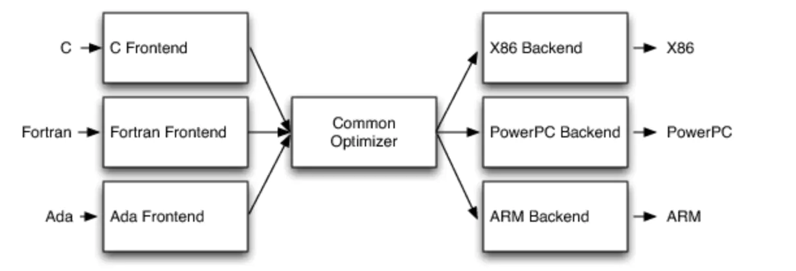

编译过程发生了什么？
前言
我们平时用 C 语言写的代码是一种语法层面接近人思维的代码，而计算机所执行的代码是机器层面的二进制代码，那么要想让我们编写的 C 语言代码在机器上运行起来，那这中间必然有一个转换过程，这个过程的最主要部分就是编译。我们在这篇文章中主要关注在编译过程中发生了什么（而不是怎么发生），通过 Clang/LLVM 观察一段代码在各个编译阶段的输出，对编译流程进行一个大致的分析。假设以下是我们的源代码：
1 | int addTwo(int first, int second) |
词法分析
对于我们输入的源代码，编译器（在词法分析阶段称为扫描器 Scaner ）首先进行的是词法分析。所谓词法分析，就是对输入的源代码一个一个字符的扫描，运用一种类似于有限状态机的算法，将源代码的字符序列分割为一系列的记号（Token），Token 的类型一般有关键字、标识符、字面常量和特殊符号（如加号、等号）等。在识别 Token 的同时，扫描器还会完成其它的一些工作。比如删除诸如注释、空格和制表符之类的字符，将标识符存放到符号表，将数字、字符串常量存放到文字表等，以备后面的步骤使用。
我们通过 Clang 编译前端，可以查看上述 C 代码的词法分析生成的 Token，如下：
1 | clang -fsyntax-only -Xclang -dump-tokens addTwo.c |
可见，进行词法分析后生成 Token，还会包含每个 Token 的一些位置信息。
语法分析
在生成 Token 以后，接下来就是语法分析，语法分析通过语法分析器（Parser） 完成。Parser 采用上下文无关文法的分析手段，生成一个体现语法规则的数据结构，抽象语法树 AST ，而 AST 的具体形状与高级语言的文法定义有关。
我们通过 Clang 编译前端，可以查看上述 C 代码的词法分析生成的 AST，如下：
1 | clang -fsyntax-only -Xclang -ast-dump addTwo.c |
其中，我们可以看到 AST 的根是一个称为 TranslationUnitDecl 的节点，这个节点代表的就是我们的 .c 文件。根节点有很多 TypedefDecl 的子节点，这是编译器给我们自动生成的一些节点，暂时不必考虑，我们重点看 FunctionDecl 这个子节点，这个节点代表的就是我们的 c 代码中定义的函数，可以看到后面显示了函数名，返回类型，形参类型等函数的属性。而 FunctionDecl 节点又有很多子节点，其中 DeclStmt 节点代表变量声明语句，ReturnStmt 节点代表返回语句。依次递归，AST 可以完美的表示出我们写的代码，并且每个树节点都会包含详细的代码中所体现出来的属性。
语义分析
语法分析仅仅对源代码进行了语法层面的分析，但此时语句的真正意义还没有被解析。比如说 C 语言里面两个指针做乘法运算时没有意义的，但是这个语句在语法上是合理的，这时候就需要语义分析了，语义分析通过语义分析器（Semantic Analyzer） 完成。语义分析阶段主要是确保代码是否违反编程语言的类型系统，并将相关信息存入符号表。比如将一个浮点型赋值给一个指针的时候，语义分析器就会发现这个类型不匹配，编译器就会报错。而将 0 作为除数是能通过语义分析的，只有在运行的时候才会报错。现在有很多静态分析工具，利用通过分析程序的控制流信息，在运行前就识别出这种运行时错误。
clang 的语义分析已经夹杂于语法分析中，上述生成的AST其实就是夹杂了语义分析的 AST。
中间代码生成与优化
现代的编译器会有很多层次的优化，往往源码级别会有一个优化过程，比如上述例子中的 int result = first + second; 这个语句，由于函数返回的是一个常量，这句代码是完全不必要存在的。但是在语法树层面的优化不是很好实现，所以往往把源代码转换成中间代码（IR） 后进行优化。IR 其实已经非常接近目标代码了，但是跟目标代码的最大区别是 IR 和目标及其和运行时的环境无关。比较常见 IR 有三地址码（LLVM IR 所采用的形式）和 P-代码。
我们可以查看上述 C 代码的生成的 LLVM IR，如下：
1 | -O0代表不执行任何优化 |
可以看到在没有执行任何优化的情况下， int result = first + second; 这个语句也被翻译成了 IR，我们再看执行优化的情况下：
1 | -O1代表执行一级优化，其中就包含死代码消除 |
可以看到整个函数体仅仅剩下了一条语句。其实在 LLVM 内部也是首先生成了没有执行优化的 IR，然后通过一个个 pass （也是优化程序），将未优化的 IR 转换为优化过后的IR。
中间代码使得编译器可以分为前端和后端。编译器前端负责产生机器无关的中间代码，编译器后端将中间代码转换成目标机器代码。对于一些可以跨平台的编译器而言，他们可以针对不同的平台使用同一个前端和针对不同及其平台的数个后端。而我们可以把 IR 优化成 IR 的过程看为中端。 比如 LLVM 编译器架构就采用了这种思想，如下图：

目标代码生成
要在指定的机器上执行，还需要将 IR 转换为二进制目标代码。我们通过以下指令直接看上面优化过后的 IR 所生成的目标文件：
1 | // llc是LLVM提供的目标代码生成器，file是Linux查看文件属性的命令 |
可以看到我们生成的是 64 位的 ELF 可重定位文件，而汇编代码也就仅仅两行，一个是把返回值存入 eax 寄存器，一个是返回指令。
总结
从最直观的角度来讲，编译器就是将高级语言翻译为机器语言的一个工具。一般的编译流程如下图：
参考资料：《程序员的自我修养》、Clang 官方文档、LLVM 官方文档